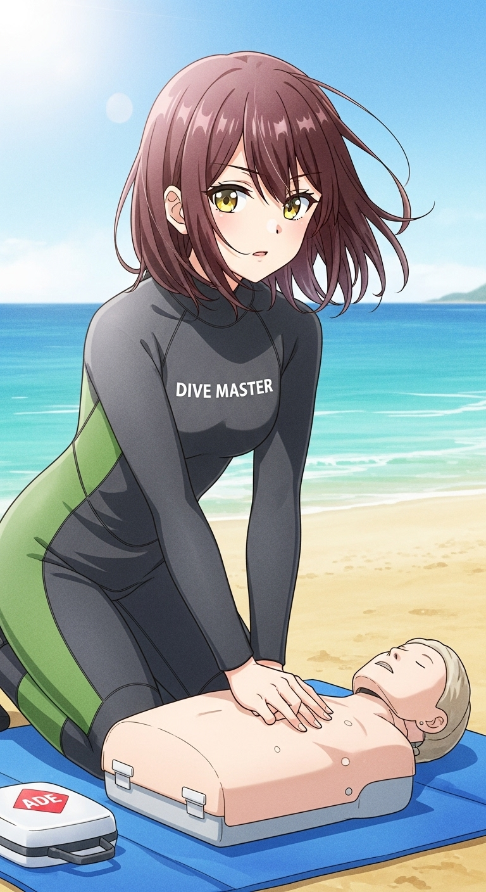
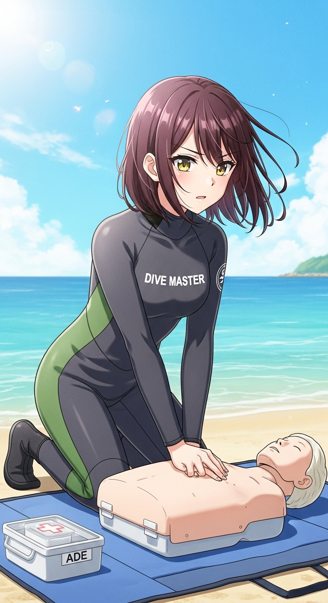
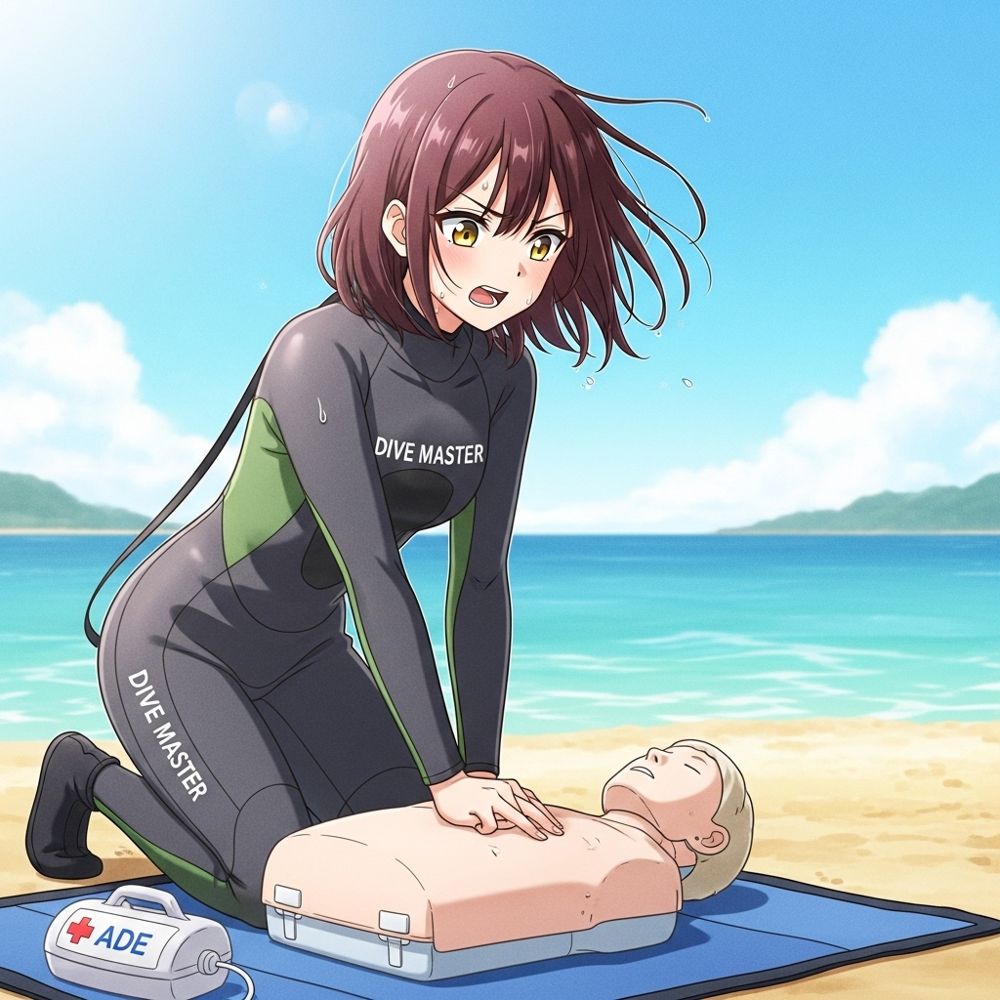
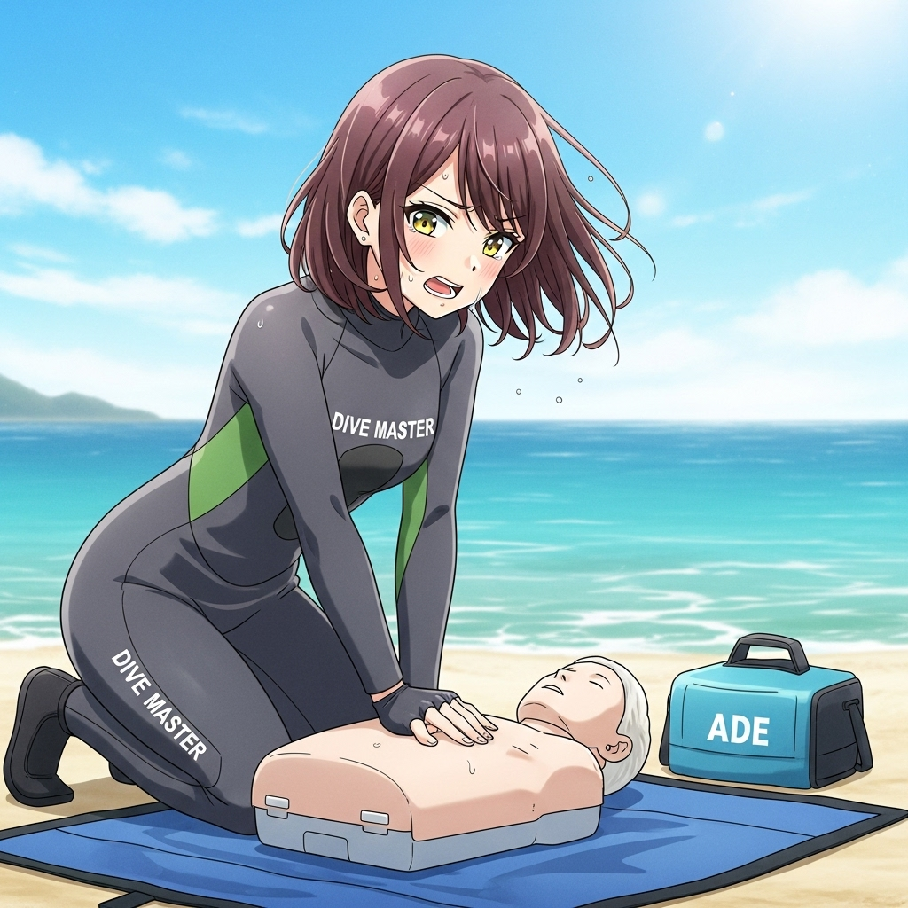
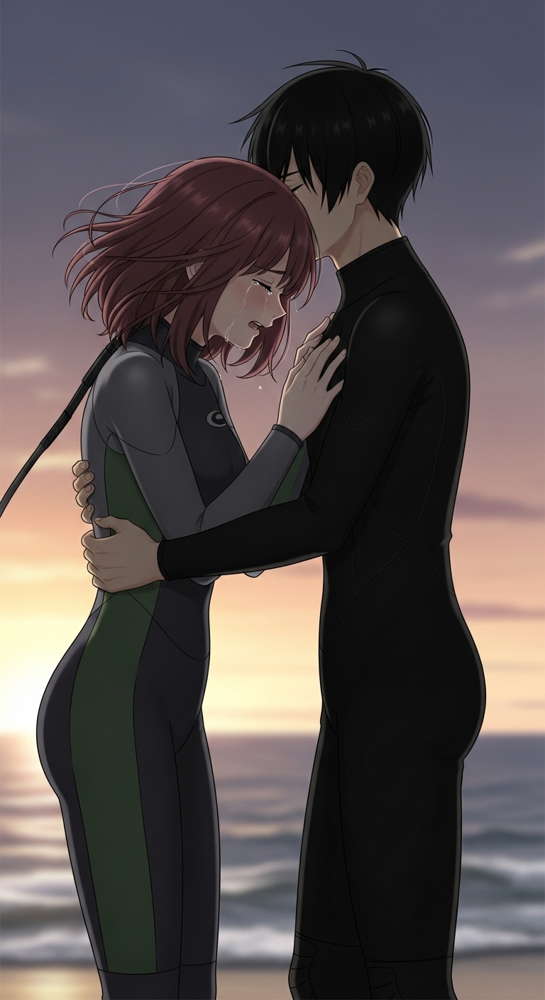
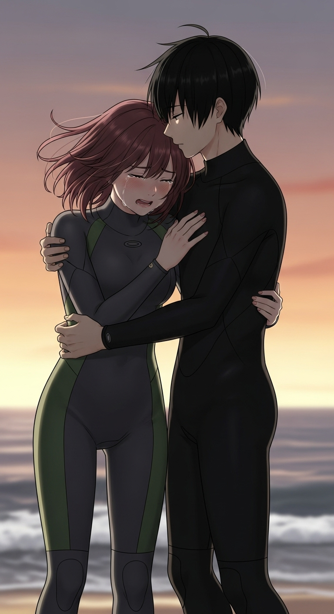
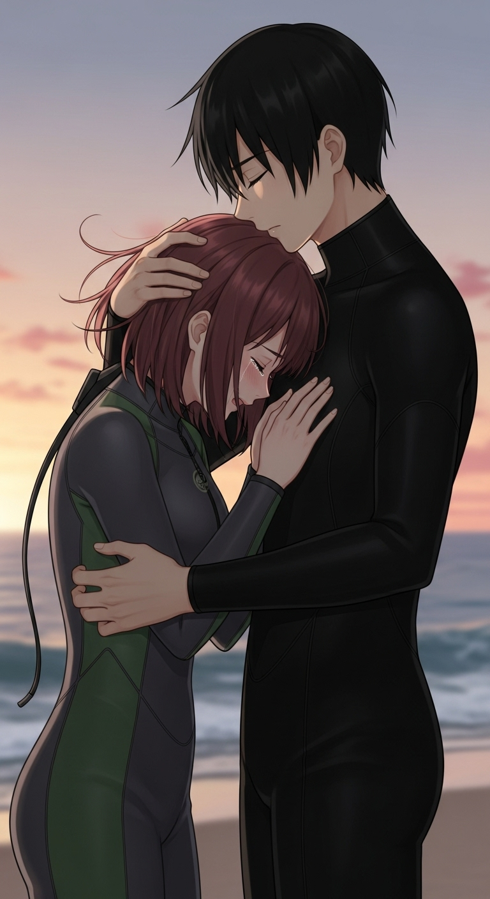

今回はキャラクターの震災被災時のエピソードが含まれます。被災体験者の方の場合、PTSD 悪化の可能性があるため、今回に限り被災体験者の方には読まないことを強く推奨します。
また今回だけはエピソードを重視したいので、プロンプト等のテロップは省略します。ご了承ください。エピソードの元となった画像と今回のエピソードで使用した画像のプロンプトはこことここで公開しています。
なお CPR の手順は JRC 蘇生ガイドライン2020 に従いました。

今週いっぱい、スタッフ研修のために、スタッフ全員で海までやってきている。
新しく開発したポイントの下見とガイド計画、純粋なスキルトレーニングと安全管理上の各種チェック、それらの意識のすり合わせ等、内容は多岐にわたる。
今日はスタッフ研修の最終日。最後の仕上げの CPR トレーニングだ。
「それじゃぁ、次はわたしが行きます」
いつもは、冗談を頻繁にとばして、場をなごませている彼女の表情が、いつになく固い。
なぜそうなのか、ぼくは知っている。
オーナーのおやっさんも知っている。チーフも知っているし、チーフ補佐の彼も知っている。
「安全よしっ！！」
指差し確認で実施場所の安全確認を行う。
「大丈夫ですか！？大丈夫ですか！？」
要救助者の肩を叩いて意識の確認をする。
「そこのあなた！！救急車を呼んでください！！」
「そっちのあなた！！AED を持ってきてください！！サービスにあります！！」
てきぱきと指示を出していく。
みんな本当に彼女の指示通りに動いてしまいそうになる。それくらい彼女は本気なのだ。トレーニングにはとても見えない。
頭部後屈オトガイ部挙上法で、要救助者の気道を確保し、要求助者の鼻と口に自分の頬を近づけて、呼吸の有無を確認する。
「意識なしっ！！呼吸なしっ！！始めます！！」

彼女の胸部圧迫をカウントする声が、波の音にまざりあいながらビーチに鳴り響く。
「1、2、3、4、5、6、7、8、9、……、29、30」
つづいて 2 回のマウス・トゥー・マウスによる吸気。CPR ダミー人形の口には、フェイス・シールドが装着されている。
彼女は陸上ではポケット・マスクは使わない。
本当はフェイス・シールドも使いたくないと、彼女は言っている。
でもフェイス・シールドなどを使わずに、口を直接要求助者の口につけることは、BLS では非推奨とされている。感染の危険性を考慮してのことだ。
彼女が陸上でポケット・マスクを使わない理由は明快だ。
まずポケット・マスクを使うと、マスクの密着度を維持するのが難しく、隙間から呼気が漏れると彼女は言う。
ポケット・マスクを使うと死腔が増えすぎる、これがポケット・マスクを使いたくない一番の理由だ、ということを日頃から強く主張している。
「気休めかも知れないけど、酸素を少しでも多く、要求助者の肺に届けたい」
彼女はいつもそう言っている。
彼女の頭部後屈オトガイ部挙上法の動作も正確だ。
2 回の吹込みのときも、ダミー人形の胸の動きを横目で目視して、きちんと送った呼気が要求助者の肺に届いていることを確認する。
30 回の胸部圧迫と 2 回の吹込みのルーチンを、救急隊が到着するまで、ただひたすら正確に繰り返す。
もしかすると気管挿入による気道確保や、カテーテルを挿入しての気管や肺からの吐瀉物、水の吸引、強心剤投与などをしないと、助からないかも知れない。
でもそれら医療行為は、ぼくたちには許されていないし、そのような技術もない。医者ではないし、そのような訓練は受けていない。
だからぼくたちは、助かることを信じて、ぼくたちにゆるされていることを、医療従事者につながるまで、ただひたすらにするしかない。
ただ、あまりに真剣で、トレーニングを超えている彼女の CPR を見ていると、不安がよぎる。また、なるんじゃないかと。

「……！！」
「…！！」
「お願いっ！！」
「動いてっ！！」
「戻ってきてっ！！」
彼女の胸部圧迫のカウントにそんな言葉が混ざり始める。
「救急車はまだっ！？」
「早くっ！！」
「早く来てっ！！」
「救急車っ！！」
そんな言葉がまざりながらも、彼女の胸部圧迫と吹き込みのペースが乱れることがない。
通常の技能を超えている。

「お願いっ！！」
「動いてっ！！」
「戻ってきてっ！！」
「行かないでっ！！」
目尻から涙がこぼれ始める。
まずい、止めないと、と思うより先に体が動いていた。
「おやじさん！！止めます！！」
涙を流しながら、髪を振り乱して、ひたすら胸部圧迫と吸気を繰り返す彼女を止める。
「もういい！！トレーニングを超えてる！！やめろっ！！」
彼女をダミー人形からむりやり引きはがす。
彼女は、あぁ……と、その場に、泣き崩れてしまう。
「すいません、おやじさん、ちょっと彼女を休ませてきます」
いまにも崩れ落ちそうになる彼女を抱きかかえて、歩いていく。
やっぱり、まだ……

「ごめん、だめなの……」
「どうしても、忘れられなくて……」
「もし、あのとき、あのとき……」
「わたしじゃなかったら！！……」

「わたしじゃなかったら！！」
「あの娘、助かったんじゃないかっ！！」
「って……」
「わたしじゃなかったら……」
「……」
「…」
「あのときの、あの娘のお父さんの顔も、お母さんの顔も、忘れられないの……」
「どうしても、消えないの……」
「あんたが殺したって、あのとき泣いていた、あのお母さんの声も、忘れられないの……」
「どうしても、あの声も消えないの……」
君のせいじゃない、街が壊れてしまったあの日、なにもかもが壊れてしまったあの日、病院の廊下に並べられた多くの人たちに黒いカードが置かれていたあの日、ぼくたちは何もできなかった、でもそれは誰のせいでもない、そんな言葉をぐっと飲み込んで、ただひたすら彼女が落ち着くまで、抱きしめるしかなかった。

「……落ち着いた？」
「……」
彼女はまだしゃくり上げている。
無理もない。
あの日、街が壊れてしまった日、だれもそんな日が来るなんて思ってなかった。
街が壊れ、多くの命が失われた日……
救急車両が来なかったあの日……
病院がまともに機能しなかったあの日……
避難所でただひたすら救助がくるのを待つしかなかったあの日……
助けられなかった命……
誰もが懸命に生きようとした……
誰も悪くはなかった……
でも、あの日を忘れるなんて無理なのだ。
「……」
「…」
「ごめんね……」
「大丈夫？」
「……うん……たぶん……」
ぼくは彼女をつよく抱きしめる。
この娘を守りたいと想う。
強くこの娘を守りたいと願う。
そのためにぼくは強くなりたい。
そのためにぼく自身がくずれないように。
そのためにぼく自身が泣いてしまわないように。
そして、彼女をささえ続けるために。
そのためにぼくは強くなりたい。
そのために、一生をかけてもかわない、そう思えるのだ。
インストラクターちゃんシリーズ内のエピソードは、あくまで架空のエピソードです。登場人物も全て架空の人物です。実在する潜水指導団体、ダイビングショップ、ダイビングサービス、ショップオーナー、インストラクター、ダイブマスター、アシスタントインストラクター、ダイバーとは一切関係がありません。また実際の災害とも一切の関係はありません。ご注意ください。